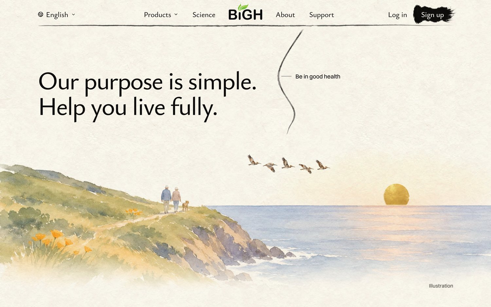
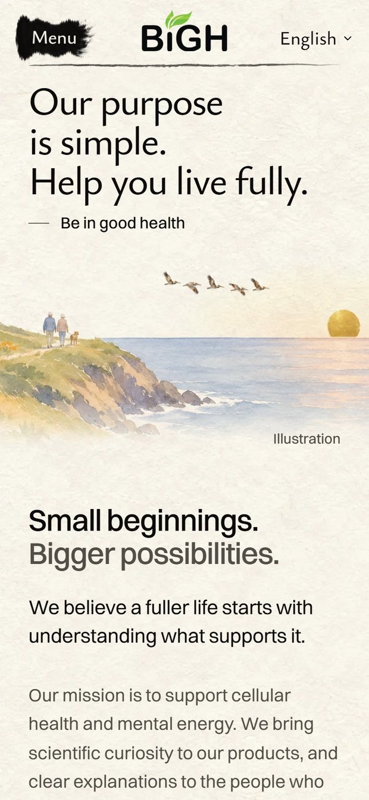
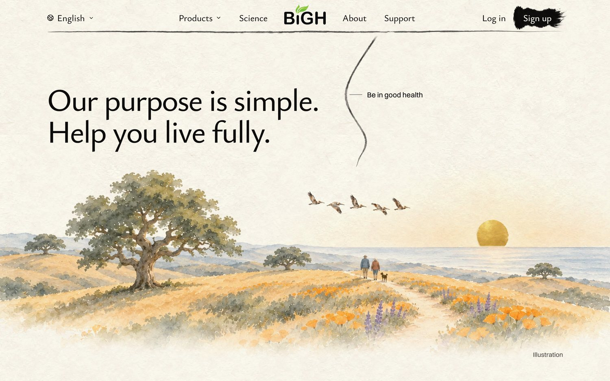
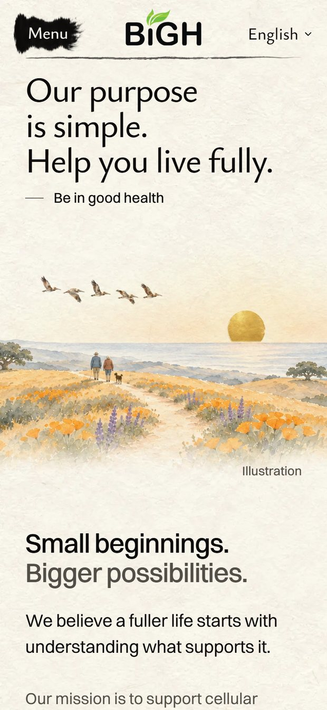
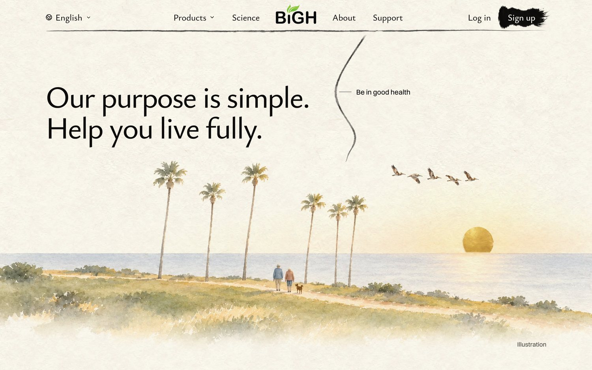
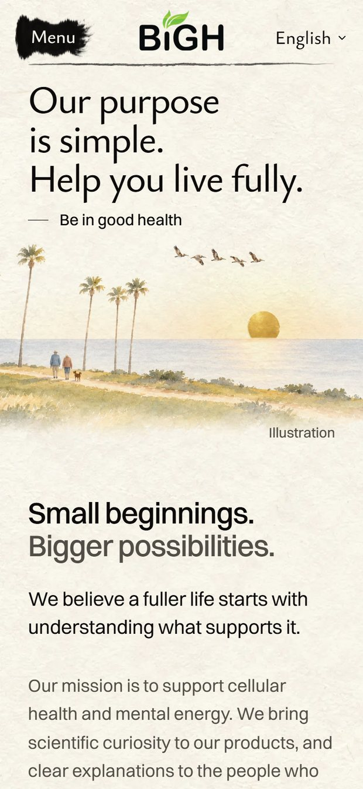

<title>Our Purpose Painting</title>
<meta name="claude:viewport-fit-sides" content="cover">
<link rel="preconnect" href="https://fonts.googleapis.com">
<link rel="preconnect" href="https://fonts.gstatic.com" crossorigin>
<link rel="stylesheet" href="https://fonts.googleapis.com/css2?family=Ysabeau:wght@500;650&display=swap">
<style>
  /* Layout: one column; each idea is its words, then the laptop and phone screens of the real
     homepage. */
  :root {
    --paper: #f6f1e7;
    --ink: #1d1b18;
    --ink-soft: #5d574e;
    --rule: #ddd4c4;
    --gold: #a77c25;
    --pick: #2f4a3a;
    --title: "Ysabeau", "Palatino Linotype", Palatino, Georgia, serif;
    --body: system-ui, -apple-system, "Segoe UI", Roboto, sans-serif;
  }
  @media (prefers-color-scheme: dark) {
    :root:not([data-theme="light"]) {
      --paper: #1b1a17; --ink: #f1ece2; --ink-soft: #b9b0a2;
      --rule: #3a3630; --gold: #d6aa52; --pick: #9cc3a8; color-scheme: dark;
    }
  }
  :root[data-theme="dark"] {
    --paper: #1b1a17; --ink: #f1ece2; --ink-soft: #b9b0a2;
    --rule: #3a3630; --gold: #d6aa52; --pick: #9cc3a8; color-scheme: dark;
  }
  body {
    background: var(--paper);
    color: var(--ink);
    font: 17px/1.55 var(--body);
    padding-left: max(16px, env(safe-area-inset-left, 0px));
    padding-right: max(16px, env(safe-area-inset-right, 0px));
  }
  main { max-width: 1100px; margin: 0 auto; padding-block: 40px 72px; display: grid; gap: 52px; }
  h1, h2 { font-family: var(--title); font-weight: 650; text-wrap: balance; margin: 0; letter-spacing: -0.01em; }
  h1 { font-size: clamp(34px, 6vw, 52px); line-height: 1.05; }
  h2 { font-size: clamp(26px, 4vw, 34px); line-height: 1.1; }
  p { margin: 0; max-width: 62ch; }
  ul { margin: 0; padding-left: 1.2em; max-width: 62ch; color: var(--ink-soft); display: grid; gap: 4px; }
  .intro { display: grid; gap: 12px; }
  .intro p { color: var(--ink-soft); font-size: 18px; }
  .today { width: min(100%, 560px); }
  .choice { display: grid; gap: 14px; padding-top: 26px; border-top: 1px solid var(--rule); }
  .head { display: flex; flex-wrap: wrap; align-items: baseline; gap: 10px 16px; }
  .letter { font-family: var(--title); font-size: clamp(44px, 7vw, 60px); line-height: 0.8; color: var(--gold); font-weight: 650; }
  .score { font: 600 15px/1 var(--body); font-variant-numeric: tabular-nums; padding: 7px 11px; border: 1px solid var(--rule); border-radius: 999px; color: var(--ink-soft); }
  .tag { font: 600 13px/1 var(--body); letter-spacing: 0.06em; text-transform: uppercase; color: var(--paper); background: var(--pick); padding: 7px 10px; border-radius: 999px; }
  .what { font-size: 18px; }
  .note { color: var(--ink-soft); }
  .shots { display: grid; grid-template-columns: 3fr 1fr; gap: 12px; align-items: start; }
  figure { margin: 0; display: grid; gap: 6px; min-width: 0; }
  figure img { display: block; width: 100%; height: auto; border: 1px solid var(--rule); border-radius: 6px; }
  figcaption { font-size: 13px; color: var(--ink-soft); letter-spacing: 0.02em; }
  @media (max-width: 640px) {
    .shots { grid-template-columns: 1fr; }
    .shots figure:last-child { width: 62%; }
  }
</style>
<main>
  <header class="intro">
    <h1>A more California walk</h1>
    <p>You found the walk on the ridge didn't feel like California: bare golden hills could be anywhere. Three ways to fix it, each laid on the real homepage. The words, the gold sun and the pelicans stay.</p>
  </header>
  <section class="choice" aria-labelledby="coast-walk-name">
    <div class="head">
      <span class="letter">1</span>
      <h2 id="coast-walk-name">The walk on the Big Sur coast</h2>
      <span class="score">9 / 10</span>
      <span class="tag">My pick</span>
    </div>
    <p class="what">The same couple and dog walk a cliff-top trail above the Pacific, poppies by the path, the sun setting on the sea.</p>
    <p class="note">A's coast with B's people: you know it's California, and it shows living fully. On a phone the people are small, at the left edge.</p>
    <div class="shots">
      <figure><figcaption>Laptop</figcaption></figure>
      <figure><figcaption>Phone</figcaption></figure>
    </div>
  </section>
  <section class="choice" aria-labelledby="oak-walk-name">
    <div class="head">
      <span class="letter">2</span>
      <h2 id="oak-walk-name">The walk among oaks and poppies</h2>
      <span class="score">8.5 / 10</span>
      
    </div>
    <p class="what">The same ridge, now with a big California valley oak, orange poppies and purple lupine along the trail, the sea behind.</p>
    <p class="note">The most California of the three, and the best on a phone. But About already has both: its first screen is poppies on golden hills, and its purpose is a big valley oak. The homepage would echo it.</p>
    <div class="shots">
      <figure><figcaption>Laptop</figcaption></figure>
      <figure><figcaption>Phone</figcaption></figure>
    </div>
  </section>
  <section class="choice" aria-labelledby="palm-walk-name">
    <div class="head">
      <span class="letter">3</span>
      <h2 id="palm-walk-name">The walk under palm trees</h2>
      <span class="score">8 / 10</span>
      
    </div>
    <p class="what">A bluff-top path by the ocean, a row of tall palms, the couple and dog walking toward the sunset.</p>
    <p class="note">Postcard California. But it reads beach town and Los Angeles more than calm health, and the tall trunks cut across the sky near the words.</p>
    <div class="shots">
      <figure><figcaption>Laptop</figcaption></figure>
      <figure><figcaption>Phone</figcaption></figure>
    </div>
  </section>
</main>
